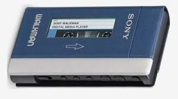

The Sony Walkman TPS-L2 is the original walkman portable cassette player, released July 1, 1979. The Sony Walkman was the first form of portable music that was released to the mainstream and changed how music is consumed forever.
The Sony Walkman has definitely gone out of fashion due to the release of Apple's ipod and now iphone, it simply could not compete. However Sony continues to use the walkman brand for most of it's portable audio devices. Sony released a 40th anniversary Walkman in 2019, tapping into the nostalgia of the cassette era.
